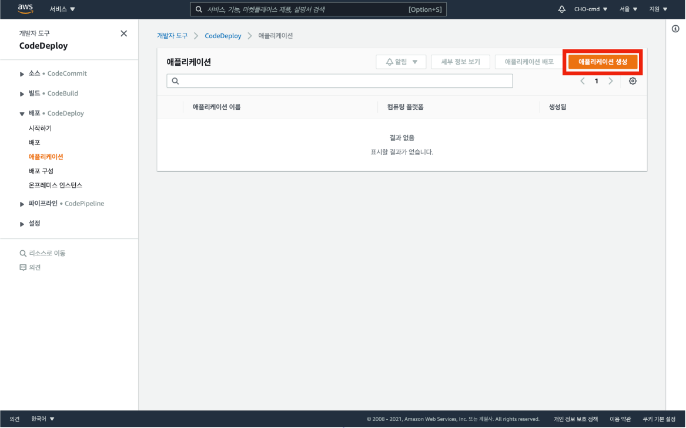
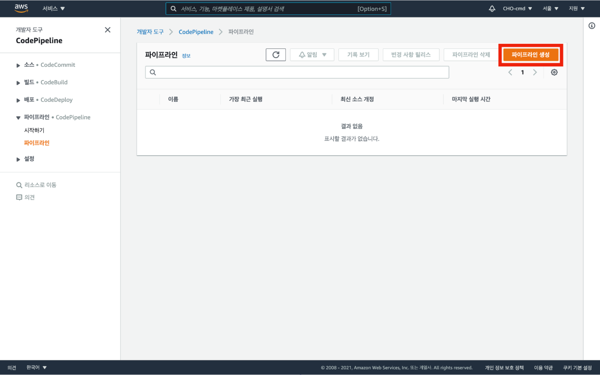

서버 배포 파이프라인 구축
1. appspec.yml 파일 생성
appspec.yml 파일은 배포 자동화를 도와주는 CodeDeploy가 인식하는 파일이다.
소스 코드의 최상위 디렉토리에 appspec.yml 파일을 생성한 뒤 파일 안의 내용을 링크를 참고하여 작성한다.
다음으로 최상위에 scripts 디렉토리를 생성한 후 그 안에 appspec.yml 파일에 작성한 배포 수명 주기에 따라서 실행될 파일을 생성하고 작성한다.
변경사항을 저장하고 commit 후 push 한다.
appspec.yml 파일 생성이 끝나면 본격적으로 배포 파이프라인 구성을 진행한다.
2. CodeDeploy 세팅
CodeDeploy 대시보드로 이동해 애플리케이션으로 이동한다.
애플리케이션 생성 버튼을 클릭한다.

애플리케이션의 이름을 임의로 입력하고 컴퓨팅 플랫폼을 EC2/온프레미스로 선택한 뒤 애플리케이션 생성 버튼을 클릭한다.
애플리케이션이 생성되면 생성한 애플리케이션의 배포 그룹 탭을 클릭하여 배포 그룹 생성 버튼을 클릭한다.
배포 그룹의 이름을 임의로 입력하고 서비스 역할 영역에서 전에 생성했던 역할을 선택한다.
환경 구성 중 Amazon EC2 인스턴스를 선택하고 태그 그룹에 EC2 인스턴스에 설정해놓았던 태그 키와 값을 선택한다.
로드 밸런싱 활성화 체크 해제 후 배포 그룹 생성 버튼을 클릭한다.
3. 서버 배포 파이프라인 구축
CodePipeline 대시보드로 이동 후 파이프라인 생성 버튼을 클릭한다.

파이프라인 이름을 임의로 입력 후 다음 버튼을 클릭한다.
소스 코드로 사용할 레포지토리가 GitHub에 저장되어 있고 소스 스테이지에서 GitHub를 사용할 수 있으므로 GitHub(버전 2)를 소스 공급자로 선택한 후 다음 버튼을 클릭한다.
GitHub에 연결 버튼을 클릭한다.
연결 이름을 임의로 입력 후 GitHub에 연결 버튼을 클릭한다.
새 앱 설치 버튼을 클릭한다.
자신의 GitHub 계정을 클릭한다.
로그인 된 후 나타나는 GitHub 화면에서 Only select repositories를 선택한 후 소스 코드로 이용할 레포지토리를 선택하고 Save 버튼을 클릭한다.

연결 버튼을 클릭한다.
레포지토리 이름을 조금 전 연결한 레포지토리 명과 같이 지정한다.
브랜치 이름은 master로 지정한다.
출력 아티팩트 형식은 CodePipeline 기본값으로 지정한 후 다음 버튼을 클릭한다.
빌드 스테이지 단계에서는 빌드 과정이 필요 없다면 빌드 스테이지 건너뛰기 버튼을 눌러 빌드 단계를 생략한다.
건너뛰기 버튼을 클릭한다.
배포 스테이지 단계에서 배포 공급자는 AWS CodeDeploy를 선택하고 리전은 아시아 태평양(서울)을 선택한다.
애플리케이션 이름은 생성해 둔 애플리케이션의 이름을 선택하고 배포 그룹은 생성해 둔 배포 그룹으로 선택한다.
배포 설정이 끝나면 다음 버튼을 클릭한다.
모든 단계의 설정을 확인한 뒤 오른쪽 하단의 파이프라인 생성 버튼을 클릭한다.
파이프라인 생성과 동시에 소스 코드의 배포가 자동으로 실행되며 실행 결과를 확인하면 된다.